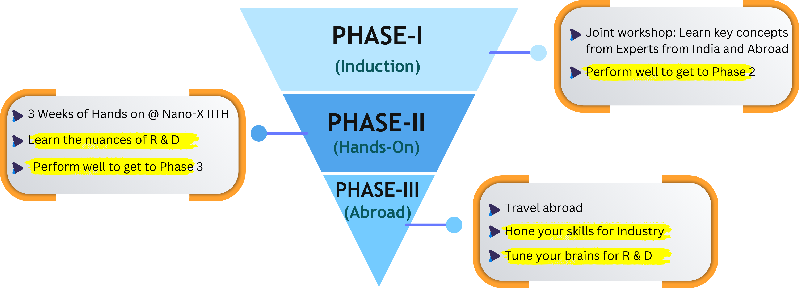

This program aims to impart basic, intermediate, and advanced know-how of semiconductor manufacturing. There will be multiple cohorts over two years. The main phases in this program are:
Induction Workshop: Quarterly workshops will be conducted in an online/hybrid format, featuring experts from Indian and US/Taiwanese Universities. They will introduce the fundamentals of semiconductor manufacturing through online/in-person lectures. These workshops will cater to students at different educational levels, including Postgraduate(PG) and Undergraduate (UG) programs, which play a crucial role in fostering the research and development (R&D) ecosystem. The top-performing participants in this workshop will be selected for the hands-on workshop at IIT Hyderabad.
Hands-on Workshop: A three-week rigorous training workshop has been designed to provide participants with substantial hands-on experience in key fabrication areas: lithography, etching, and deposition. Under expert guidance, students will actively operate equipment and demonstrate fundamental processes. The top-performing participants in the hands-on workshop will be selected for the advanced workshop at foreign universities.
Advanced Semiconductor Manufacturing Workshop: An advanced Semiconductor Manufacturing Workshop at universities abroad aims to provide advanced knowledge of semiconductor fabrication and key aspects of manufacturing, including process monitoring and control. Students will participate in hands-on experiential learning activities through tutorials on fabrication processes, an introduction to cleanroom principles/operation and team projects related to process monitoring/control.

Online Workshop Dates: June 10th to June 14th 2024
Application Deadline: June 5th 2024 11.59 PM
Apply Now